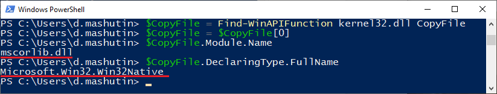

Взаимодействие с функциями Windows API в PowerShell¶
Windows PowerShell это объектно-ориентированная командная оболочка с поддержкой сценариев. Она функционирует на основе платформы .NET Framework. В работе PowerShell используются классы .NET, которые содержат свойства и методы. Эта командная оболочка позволяет эффективно выполнять задачи, связанные с обслуживанием операционной системы, настройкой серверов, установкой программного обеспечения и автоматизированным администрированием сетей.
Однако существуют отдельные низкоуровневые задачи, для которых недостаточно стандартной функциональности Windows PowerShell. Для их выполнения необходимо обращение к функциям Windows API, которые содержатся в системных динамических библиотеках (DLL). Непосредственный вызов функций WinAPI не поддерживается, однако существуют способы получить доступ к методам таких функций в текущем сеансе PowerShell:
Использование командлета Add-Type
Извлечение приватных методов .NET
Рефлексия
Использование командлета Add-Type¶
Командлет Add-Type позволяет скомпилировать код требуемой функции Windows API на языке C# и использовать статический метод .NET в текущем сеансе PowerShell.
Для того чтобы применить командлет Add-Type, необходимы сведения о типах данных и параметрах нужной функции Windows API. Эти данные доступны в документации Microsoft. Например, для функции ShowWindowAsync приводится следующий синтаксис:
BOOL ShowWindowAsync(
HWND hWnd,
int nCmdShow
);
Данная функция имеет тип возвращаемого значения BOOL и два параметра – дескриптор окна hWnd и целочисченный nCmdShow.
Для обращения к функции WinAPI в среде PowerShell ее необходимо «обернуть» в код C#. На сайте pinvoke.net представлены сигнатуры C# для большинства существующих функций WinAPI. Функции рассортированы в алфавитном порядке и объединены в группы по динамическим библиотекам. Доступен полнотекстовый поиск. Копирование готового кода C# ускоряет и упрощает добавление методов Windows API в сеанс PowerShell. Использование проверенных сигнатур с сайта pinvoke.net уменьшает вероятность ошибок в коде.
В разделе функции ShowWindowAsync на сайте pinvoke.net представлена следующая сигнатура С#:
[DllImport("user32.dll")]
static extern bool ShowWindowAsync(IntPtr hWnd, int nCmdShow);
Как видно из приведенного кода, тип данных BOOL в C/C++ соответствует bool в .NET, дескриптор HWND задается как IntPtr, а тип int конвертируется без изменений.
Необходимо объявить переменную и присвоить ей значение при помощи скопированной сигнатуры C#:
$Signature = @"
[DllImport("user32.dll")]
public static extern bool ShowWindowAsync(IntPtr hWnd, int nCmdShow);
"@
В приведенном примере сигнатура записывается в переменную $Signature. При этом в код сигнатуры добавлено ключевое слово public. Это нужно для того, чтобы сделать новый метод доступным в текущем сеансе PowerShell.
Далее следует добавить тип при помощи командлета Add-Type и записать его в переменную. В командлет в качестве параметров передаются объявленная ранее переменная с сигнатурой C#, наименование типа name и пространство имен namespace.
$ShowWindowAsync = Add-Type -MemberDefinition $Signature -Name "Win32ShowWindowAsync" -Namespace Win32Functions -PassThru
По умолчанию командлет Add-Type не создает объект для метода в текущем сеансе PowerShell. Для этого нужно дополнительно указать параметр PassThru. В дальнейшем для ссылок на класс в текущем сеансе PowerShell можно будет использовать заданные наименование типа и пространство имен следующим образом: “[Win32Functions.Win32ShowWindowAsync]”.
Вот пример обращения к добавленному в сеанс PowerShell статическому методу функции WinAPI:
$ShowWindowAsync::ShowWindowAsync((Get-Process -Id $pid).MainWindowHandle, 2)
Для вызова статического метода .NET необходимо поставить два двоеточия между переменной и наименованием метода. В примере выше метод функции ShowWindowAsync используется для сворачивания активного окна. Для этого командлет Get-Process при помощи переменной $pid получает идентификатор процесса, который сопоставлен текущему сеансу PowerShell. Затем метод ShowWindowAsync присваивает дескриптору главного окна этого процесса MainWindowHandle значение “2”, что соответствует свернутому положению окна.
Аналогичный код можно использовать для создания соответствующей функции в PowerShell. При добавлении скрипта в профиль пользователя метод будет доступен в последующих сеансах.
Извлечение приватных методов .NET¶
При работе .NET задействуются функции Windows API. Для вызова функций фреймворк обращается к загруженным динамическим библиотекам при помощи приватных статических методов с атрибутом DllImport.
Windows PowerShell позволяет написать скрипт или функцию, которая будет искать ссылку на нужный метод WinAPI по всем загруженным библиотекам. Вот пример такой функции (источник):
function Find-WinAPIFunction
{
[CmdletBinding()]
[OutputType([System.Reflection.MethodInfo])]
Param
(
[Parameter(Mandatory = $True, Position = 0)]
[ValidateNotNullOrEmpty()]
[String]
$Module,
[Parameter(Mandatory = $True, Position = 1)]
[ValidateNotNullOrEmpty()]
[String]
$FunctionName
)
[System.AppDomain]::CurrentDomain.GetAssemblies() |
ForEach-Object { $_.GetTypes() } |
ForEach-Object { $_.GetMethods('NonPublic, Public, Static') } |
ForEach-Object { $MethodInfo = $_; $_.GetCustomAttributes($false) } |
Where-Object {
$MethodInfo.Name.ToLower() -eq $FunctionName.ToLower() -and
$_.Value -eq $Module
} | ForEach-Object { $MethodInfo }
}
Например, при помощи данной функции можно найти метод CopyFile в библиотеке kernel32.dll и определить, в каких именно контейнерах он содержится. Для этого необходимо объявить переменную $CopyFile и передать в нее результаты поиска «CopyFile» в библиотеке kernel32.dll от функции Find-WinAPIFunction:
$CopyFile = Find-WinAPIFunction kernel32.dll CopyFile
Если «CopyFile» упоминается в загруженных динамических библиотеках несколько раз, функция передаст в переменную массив результатов. Чтобы перезаписать в переменную только первый результат, необходимо выполнить следующее:
$CopyFile = $CopyFile[0]
Далее следует определить, в каком модуле и типе содержится метод:
$CopyFile.Module.Name
$CopyFile.DeclaringType.FullName
При вводе указанных команд в окне консоли PowerShell отобразится следующее:
Полученные данные указывают на то, что метод CopyFile содержится в библиотеке mscorlib.dll, в типе Microsoft.Win32.Win32Native.
Зная модуль и тип, в которых содержится метод CopyFile, можно добавить в сеанс PowerShell функцию, которая позволит обращаться к данному методу, извлекая его из указанной библиотеки и типа. С примером такой функции можно ознакомиться здесь .
Рефлексия¶
Еще один способ вызова методов функций WinAPI в среде PowerShell – рефлексия. Сначала выполняется интроспекция кода, то есть определение методов и свойств функции. В PowerShell это проще всего реализуется применением командлета Get-Member. Затем полученные данные используются для динамической генерации кода.
Для лучшего понимания процесса рефлексии и динамической генерации кода следует представить текущее системное окружение в виде иерархической структуры вложенных контейнеров. Верхний уровень это AppDomain текущего сеанса PowerShell. В нем содержится множество сборок. Сборки содержат в себе модули, то есть динамические библиотеки DLL. Модули являются контейнерами типов. Наконец, типы содержат члены, которые и подвергаются рефлексии. Члены типов – это методы, свойства, вложенные типы и события.
Концепция динамической генерации кода предусматривает задание элементов структуры всех уровней вложенности. Сначала задается динамическая сборка в текущем AppDomain. Затем последовательно задаются динамический модуль, динамический тип и динамический метод. Динамическому методу присваиваются атрибуты Public и Static, а также специальный атрибут DllImport. В конце применяется метод CreateType, чтобы дать текущему сеансу PowerShell доступ к новому динамическому методу.
Здесь можно ознакомиться с примером функции, в которой применяется описанный выше процесс.
Выбор способа¶
Командлет Add-Type это наиболее простой способ получить доступ к функциям WinAPI в среде оболочки PowerShell, при этом вероятность появления ошибок в коде небольшая. Данного способа достаточно для доступа к большинству функций их системных динамических библиотек.
Однако при использовании командлета Add-Type происходит запись временных файлов на диск и обращение к компилятору языка С# - csc.exe. Это может быть нежелательно тогда, когда требуется минимизировать следы вмешательства. В таких случаях предпочтительнее использовать извлечение приватных методов .NET.
Применение рефлексии оправдано тогда, когда нужной функции WinAPI нет в загруженной части фреймворка .NET, либо она содержится в недоступной из текущего сеанса библиотеке DLL.